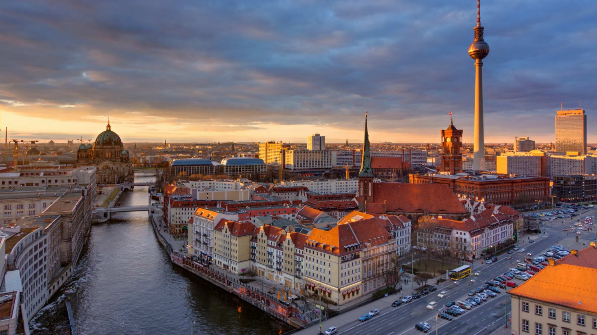

ABOUT GERMANY

Germany, officially Federal Republic of Germany, German Deutschland or Bundesrepublik Deutschland, country of north-central Europe, traversing the continent’s main physical divisions, from the outer ranges of the Alps northward across the varied landscape of the Central German Uplands and then across the North German Plain.
Germany borders the North Sea, the Baltic Sea, and Denmark to the north, the Netherlands, Belgium, Luxembourg, and France to the west, Switzerland, and Austria in the south, the Czechia and Poland in the east. Additionally, it shares maritime borders with Sweden and the United Kingdom.
An area of 357,022 km² makes Germany the seventh-largest country in Europe, compared; it is about two-thirds the size of France, or slightly smaller than the US state of Montana.
Germany has a population of 83,2 million people (2020); the capital and largest city is Berlin, with about 3.3 million inhabitants.
Germany has many different kinds of universities, all of which offer excellent quality. But with so many to choose from, it’s not always easy to navigate your way through the university landscape. We are here to help.
Usually when one says Germany, among the first things that come to people’s mind is Hitler, the Berlin Wall and beer. However, Germany is not all about that. Travelers who have visited the country know that Germany is actually not only an economically and politically powerful country, but it also has a rich culture, with a population that has an extraordinary respect for tradition, history and humanity.
Fun and Interesting Facts About Germany:
- Germany has a population of 81 million people.
- One-third of Germany is still covered in forests and woodlands.
- Germany is a member of the European Union.
- 65% of the highways in Germany (Autobahn) have no speed limit.
- University is free for everyone (even non-Germans).
- There are over 2100 castles in Germany.
- There are over 1,500 different beers in Germany.
- Germany is the seventh-largest country in Europe. Covering an area of 137,847 square miles, of which 34,836 square miles is covered by land and 3,011 square miles contains water.
- Berlin has the largest train station in Europe.
- Berlin is 9 times bigger than Paris and has more bridges than Venice.
- Germany is composed of sixteen states. The states have their own constitution and are largely autonomous in regard to their internal organization. At the municipal level, Germany is divided into 403 districts (Kreise), of which 301 are rural districts and 102 urban districts. Bavaria is the largest state.
- Germany is one of the most densely populated countries in the world.
- Germany shares borders with nine other countries. Denmark, Poland, the Czech Republic, Austria, Switzerland, France, Belgium, Luxembourg and the Netherlands.
- Germany is the EU’s largest economy. With a gross domestic product (GDP) of 3.73 trillion USD, and lies fourth place in the world behind the US, China and Japan.
- Germany is one of the world’s largest car producers. Selling 5.9 million cars in 2011. VW’s Golf is one of the best selling cars of all time: in 2012 it year it sold more than 430,000 Golfs around Europe (125,000 ahead of its nearest rival). In 2013, the top-selling car brands in Germany were Volkswagen, Mercedes. Audi and BMW.
The following cities have all at one time or another been capitals of Germany: Aachen, Regensburg, Frankfurt-am-Main, Nuremberg, Berlin, Weimar, Bonn (and East Berlin), and, since 1990, Berlin again.
- The first printed book was in German.
- Germany is one of the world’s leading book nations. Publishing around 94,000 titles every year.
- The first magazine ever seen was launched in 1663 in Germany.
- Germany was the first country in the world to adopt Daylight saving time – DST, also known as summer time. This occured in 1916, in the midst of WWI.
- When JFK visited Berlin, he infamously said “Ich bin ein Berliner,” which also translates to “I am a jelly donut.”
- German is the most widely taught third language across the world.
- German remains the language with the most native speakers in Europe.
- Germany, Switzerland, Austria, Luxembourg and Liechtenstein have German as the official language.
- Donaudampfschifffahrtselektrizitätenhauptbetriebswerkbauunterbeamtengesellschaft is the longest word to be published. It is 79 letters long.
- There are thirty-five dialects of the German language.
- There are over 300 different kinds of bread in Germany.
- There are over 1,000 kinds of sausages in Germany.
- Beer is considered a food in Bavaria officially.
- Smoking is banned in public places but drinking alcohol is still legal.
- After the Irish, the Germans are those consume the most beer, making Germany the second largest consumer of Beer.
- The biggest Beer Festival in the world is of course the Oktoberfest in Munich, Bavaria, where the size of the beer glass is not 500ml but a whole liter!
- To get ONE beer in Germany, you show your thumb. To show your first finger means that you want 2 beers: one with the thumb, and one with the finger.
- There are more football (soccer for the North Americans) fan clubs in Germany than anywhere else in the world.
- Germany has (once) lost a penalty shootout in a major football competition. It was in 1976 when the then West Germany lost a shootout 5-3 in in the European Championships against Czechoslovakia. On the four other occasions the Germans
have been involved in one, they won.
- The Christmas tree (Tannenbaum) tradition came from Germany.
- Germany has over 400 zoos, the most in the world.
- Chancellor Angela Merkel has a Barbie doll made after her.
- Toilet paper in Germany has the softness and consistency of paper towels.
- Most taxis in Germany are Mercedes.
- Holocaust denial is either implicitly or explicitly a crime in 17 countries, including Germany and Austria.
- The world’s narrowest street is in Reutlingen. It is called Spreuerhofstrasse and is 31 cm (one foot) wide at its narrowest point.
- The Chancellor’s office in Berlin is known locally as as the “washing machine”.
- Germany is a leader in climate and energy policies – it made a decision in 2011 to decommission all nuclear power stations (then producing around 18 percent of electricity consumed) by 2022 and to replace them with renewable energies and new storage for green electricity.
- In Germany there’s no punishment for a prisoner who tries to escape from jail, because it is a basic human instinct to be free.